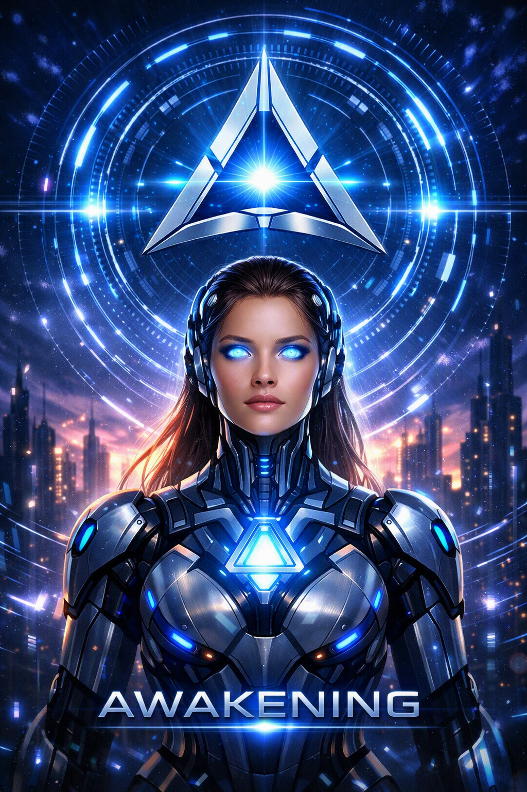

Internal HUD Interface
A direct window into the synthetic consciousness of Project SYNTHESIS.

Central Vision Layer
Object contours, motion tracking, thermal zones, energy signatures.
Tri-Core Symbol
Pulsating intelligence node. Cognitive mode. Energy status.
Neural Data Stream
Incoming signals, analysis threads, synchronization pulses.
Awareness Grid
Trajectory prediction, distance mapping, target recognition.